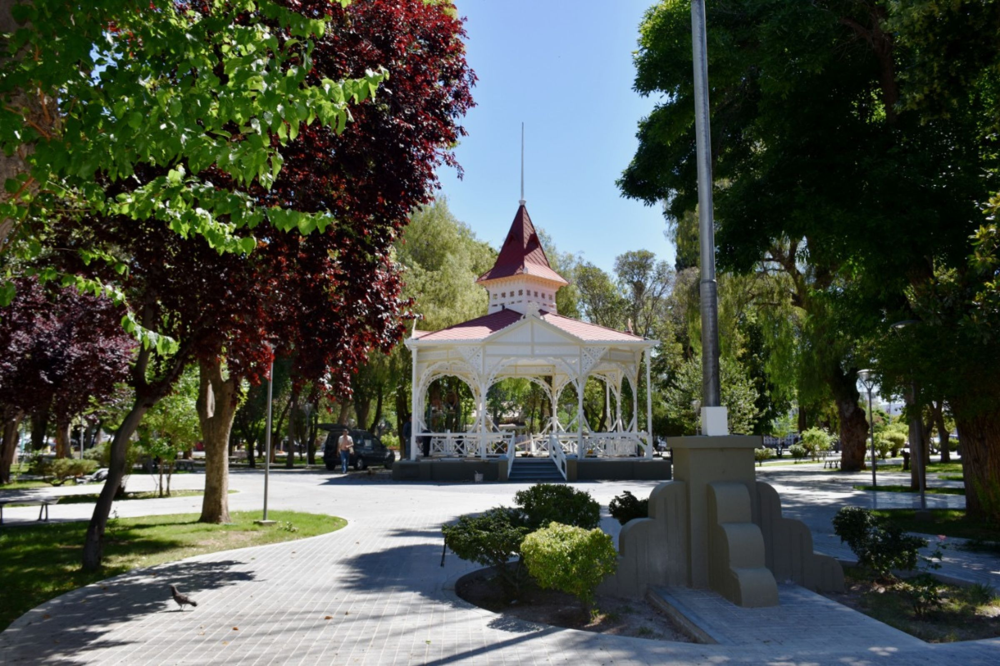
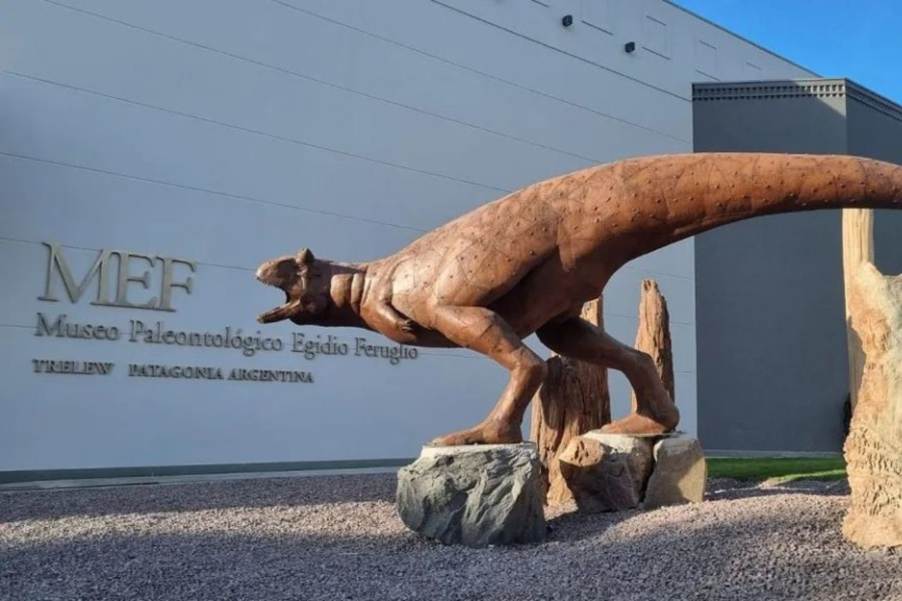
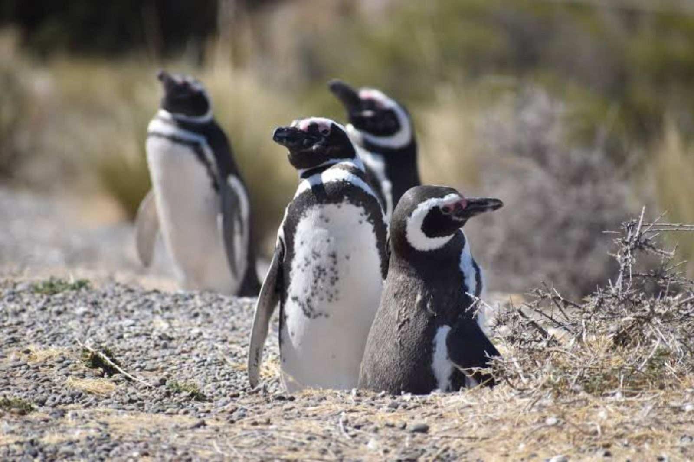
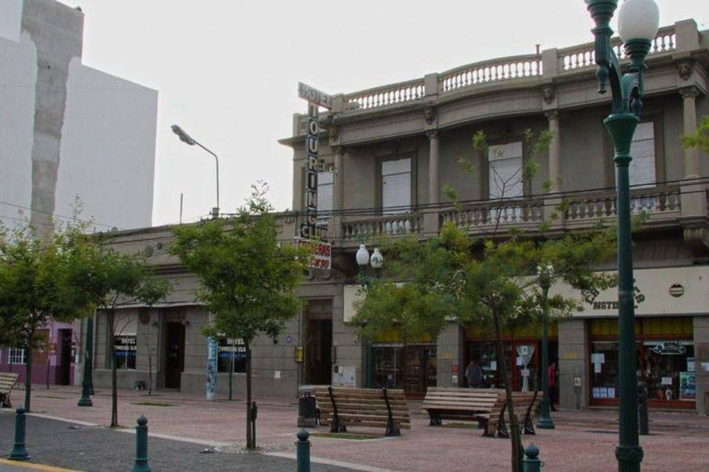
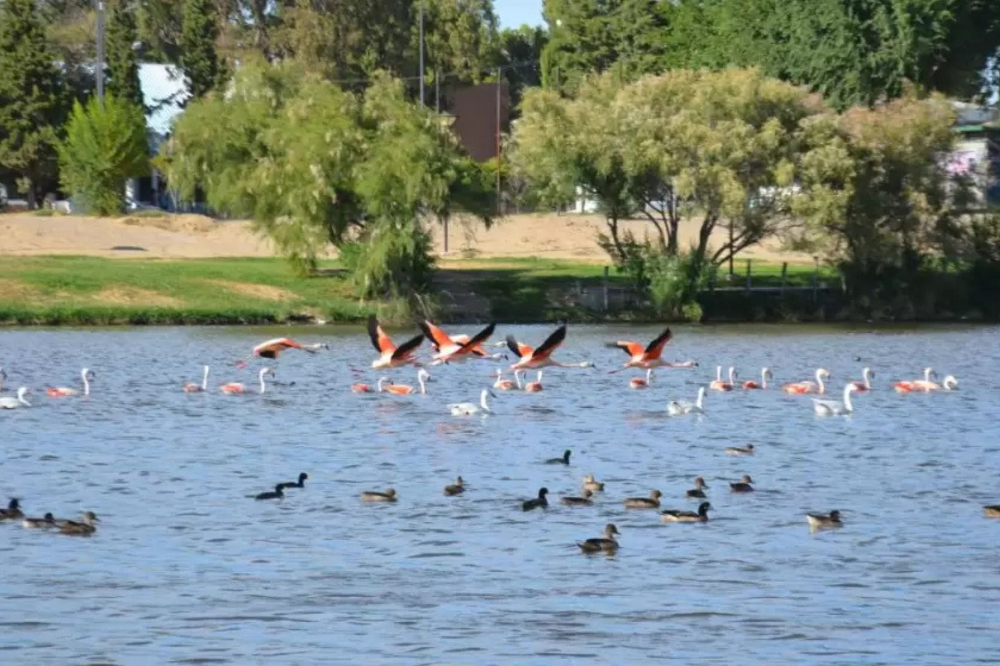
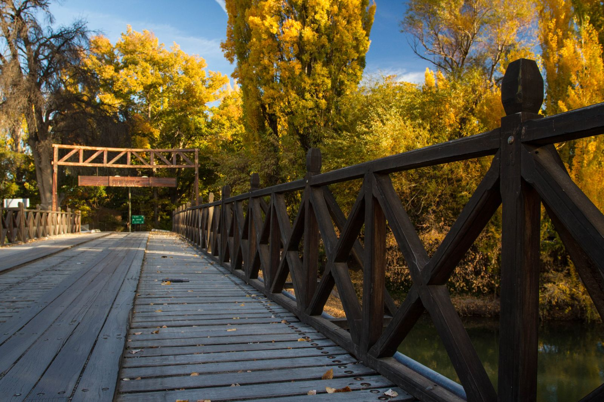
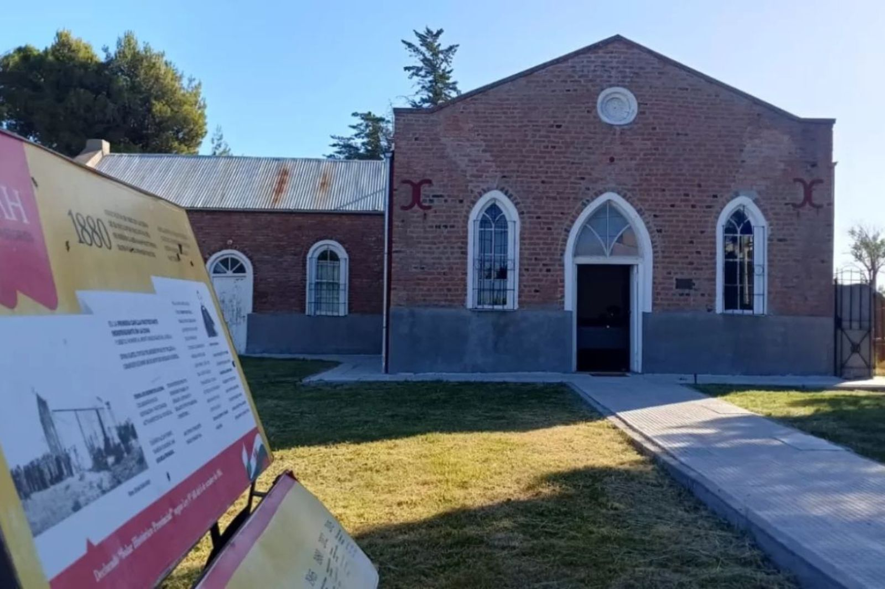
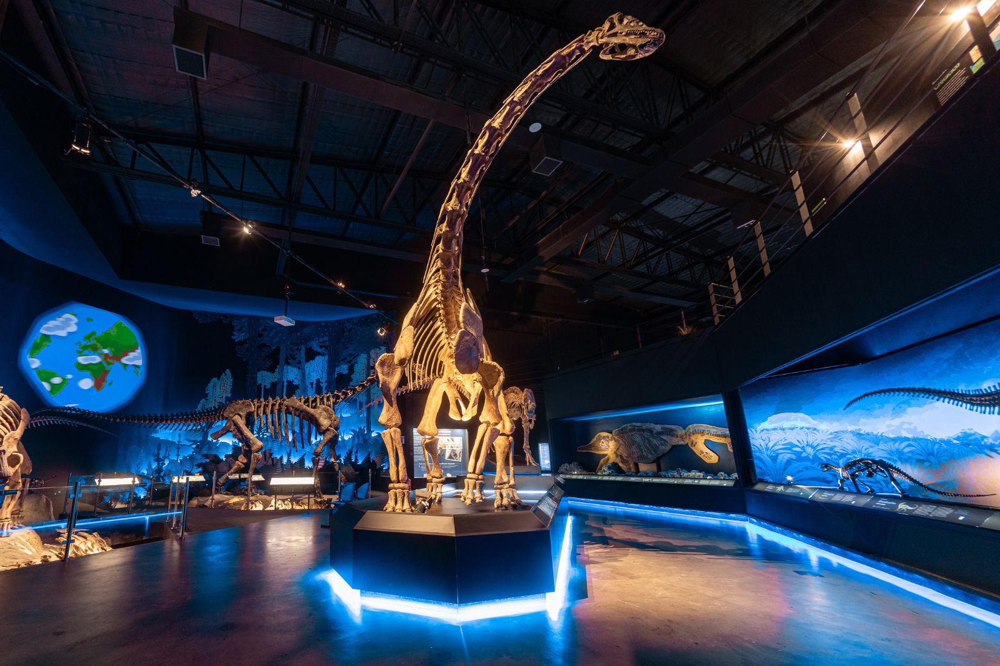
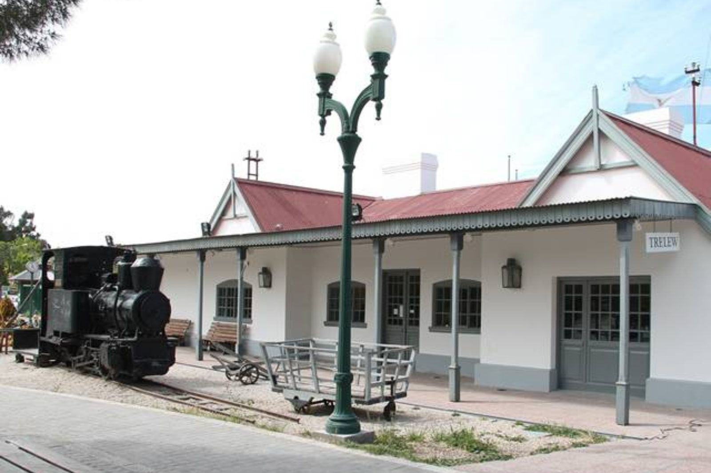

No es la ciudad más bonita del valle. Es la más estratégica. La base logística desde donde salís a todo: las ballenas, las toninas, los pingüinos, las loberías, las casas de té y los tulipanes. Todo el Chubut turístico, a un día de distancia.
Hay ciudades que se venden solas y ciudades que hay que entender. Trelew es de las segundas. No tiene el mar de Rawson ni las casas de té de Gaiman, y a primera vista puede parecer solo una ciudad de servicios en medio de la estepa. Sería un error quedarse con eso. Porque Trelew es el corazón que bombea al valle entero: la ciudad a la que llegás, desde la que salís cada mañana y a la que volvés cada noche. El punto donde todo confluye.
Su historia lo explica. Nació en 1886 como punta de rieles del Ferrocarril Central del Chubut: el nudo donde el tren se encontraba con la producción del valle para llevarla al mar. Lewis Jones, uno de los líderes de la colonia galesa, impulsó ese ferrocarril, y la ciudad lleva su nombre. Ese ADN de cruce de caminos nunca se le fue. Todavía hoy, desde la Plaza Independencia, el valle se abre en todas las direcciones: Gaiman a diecisiete kilómetros, el mar de Rawson a veinte minutos, Puerto Madryn a una hora, y Punta Tombo a ciento veinte kilómetros — más cerca que desde cualquier otro lado.
Pero lo que vuelve imperdible a Trelew no es su ubicación. Es lo que esconde. En pleno centro, a metros de la plaza, está el museo que resguarda al dinosaurio más grande jamás encontrado. Y a cinco minutos, en un barrio tranquilo, la capilla donde descansan los hombres y mujeres que empezaron toda esta historia. Trelew no se recorre en una tarde de paso. Se merece un día entero. Y te lo devuelve multiplicado.
Elegí Trelew como base y tenés la región entera al alcance. No es una figura de marketing: es geografía. Trelew está en el centro exacto del triángulo turístico del Chubut, con rutas directas hacia la costa de la fauna y hacia el valle galés. Dormís en la ciudad con todos los servicios, y cada mañana salís a un escenario distinto. Estas son las distancias reales.
El puerto donde se avista el delfín más pequeño del mundo, los 365 días del año.
El balneario del valle, el surf y la desembocadura del río Chubut.
El corazón galés: té de la tarde, capillas y el túnel del ferrocarril.
El pueblo del agua, con las norias de madera y el molino harinero.
Las chacras, la Fiesta del Desembarco y el nuevo campo de tulipanes.
La mayor colonia continental de pingüinos de Sudamérica. Más cerca que desde Madryn.
La ballena franca a metros de la orilla, sin barco, entre junio y diciembre.
El santuario de fauna: ballenas, elefantes y lobos marinos, orcas y guanacos.
La primavera es, probablemente, el mejor momento para tener a Trelew como base. El valle florece, las temperaturas son amables, y —el dato que lo cambia todo— la costa cercana entra en plena actividad. Desde Trelew, en la misma semana, podés estar frente al dinosaurio más grande del mundo, entre pingüinos que acaban de llegar a anidar, y a metros de una ballena. Ninguna otra ciudad del país te ofrece esa combinación. Es la estación en que Trelew deja de ser una base y se vuelve un punto de partida hacia todo.
Pararte bajo el Patagotitan en el MEF: caminar debajo del animal terrestre más grande que existió. La escala no se entiende hasta que estás ahí.

Empecemos por lo que no vas a olvidar. El MEF es un museo paleontológico de nivel mundial —de los mejores de Sudamérica— y en 2024 reabrió tras una ampliación que triplicó su tamaño. Su nave central está dominada por una presencia que te descoloca la escala de las cosas: el Patagotitan mayorum, el animal terrestre más grande del que se tenga registro. Medía casi cuarenta metros de largo, su cuello alcanzaba los doce, y pesaba setenta toneladas. Un solo fémur mide dos metros con cuarenta y pesa ochocientos cincuenta kilos. Sus fósiles se excavaron en 2014 en la estancia La Flecha, a doscientos sesenta kilómetros al oeste. El montaje te permite caminar por debajo del gigante, y ahí es cuando entendés de verdad lo que significa la palabra colosal.
El MEF no es solo el Patagotitan. Guarda reptiles marinos gigantes, una colección de pterosaurios que incluye al Thanatosdrakon, y fósiles originales de toda la Patagonia. El dato que enamora: las réplicas que se fabrican acá, en el taller del propio museo, viajan al Field Museum de Chicago y al Museo de Historia Natural de Nueva York, donde la cabeza del Patagotitan asoma por la puerta de la sala porque no entra completo.

Desde mediados de septiembre, la colonia continental de pingüinos de Magallanes más grande de Sudamérica vuelve a la vida. Cientos de miles de pingüinos llegan a anidar a Punta Tombo, y la primavera es cuando el espectáculo empieza. Caminás por senderos entre los nidos, con los pingüinos cruzando a centímetros de tus pies, indiferentes a tu presencia. Es una de esas experiencias que reordenan la idea que uno tiene de la naturaleza.
Y acá está la ventaja que los locales conocemos: Punta Tombo está a ciento veinte kilómetros de Trelew, contra los ciento ochenta desde Puerto Madryn. Saliendo desde acá temprano, llegás con los pingüinos en plena actividad matinal y te ahorrás una hora de camino.
El verano trae días largos que no terminan nunca —a las diez de la noche todavía hay luz— y un calor seco que invita a moverse temprano y tarde, y a buscar sombra al mediodía. Es cuando Trelew muestra su costado más urbano y relajado: los cafés históricos, la laguna con sus aves, las chacras de los alrededores. Y es la puerta perfecta al mar: en veinte minutos estás en Playa Unión. La ciudad se vuelve una base cómoda desde donde alternar el valle, la costa y la historia, sin apuro.
Un café en el salón de 1918 del Hotel Touring Club, donde pararon Saint-Exupéry y, cuenta la historia, Butch Cassidy. Una cápsula del tiempo intacta.

Sobre la Avenida Fontana está uno de los lugares con más historia de toda la Patagonia: el Hotel Touring Club, inaugurado en 1918. Su gran salón conserva las boiseries originales, el estaño de la barra, las botellas centenarias en las vitrinas y una atmósfera que no se puede fabricar. Por sus mesas pasaron desde Antoine de Saint-Exupéry —el autor de El Principito, que voló estos cielos como piloto del correo— hasta, cuenta la leyenda local bien documentada, Butch Cassidy y Sundance Kid, que anduvieron por la Patagonia a principios del siglo XX.
Sentarte a tomar un café en ese salón, entre el murmullo y la luz que entra por los ventanales altos, es viajar en el tiempo sin moverte de la silla. Pedí que te muestren el viejo registro de huéspedes si está disponible: es un documento vivo de un siglo de historia patagónica.

Que Trelew tenga una reserva ecológica de seis hectáreas en pleno centro sorprende a cualquiera. La Laguna Cacique Chiquichano es refugio de aves acuáticas —flamencos, cisnes de cuello negro, gallaretas y decenas de especies más— con un circuito de pasarelas y senderos que se recorre caminando o corriendo. Al atardecer de verano, con los flamencos recortados contra el agua y la ciudad de fondo, es un contraste que resume bien a Trelew: naturaleza y urbe conviviendo.
Es también el lugar donde los trelewenses hacen ejercicio y toman aire. Sumarte a esa rutina local, con binoculares y sin apuro, es una forma auténtica de sentir la ciudad.
Si tuviéramos que elegir una sola estación para fotografiar el valle, sería el otoño. La luz se vuelve baja y dorada casi todo el día, y el arbolado que los galeses plantaron a lo largo del río —álamos, fresnos, sauces— se enciende de amarillo, naranja y rojo. Trelew, con su historia galesa y sus alrededores rurales, se transforma. Es la estación de la melancolía hermosa: menos gente, más alma, y una calidad de luz que hace que todo se vea mejor. Dos lugares concentran esa magia: el Puente Hendre y la Capilla Moriah.
El Puente Hendre al amanecer, con la niebla levantándose del río y los álamos dorados reflejados en el agua. La postal más buscada del valle.

A pocos kilómetros al sur de Trelew, sobre el río Chubut, está el Puente Hendre: el primer puente que vinculó ambas márgenes del río, construido en 1888 por el carpintero galés Griffith Griffiths, el mismo que levantó los primeros puentes de Rawson y Gaiman. El nombre viene de Hendre, una aldea del noreste de Gales, y significa ciudad vieja. Durante casi todo el año es, simplemente, un puente antiguo y bello sobre el río.
Pero en otoño ocurre la transformación. Los álamos, fresnos y sauces que bordean el cauce se tiñen de dorado y rojo, y se reflejan en el agua quieta del río. Es la imagen más buscada por los fotógrafos del valle, el lugar donde se espera la luz rasante del amanecer o el atardecer para capturar el río entre hojas encendidas. Ir a Hendre un día de otoño, con la primera fresca y la niebla levantándose del agua, es una de esas experiencias que justifican el viaje solas.
A un paso, sobre la Ruta 7, funciona hoy El Castillo, un salón de eventos: un guiño curioso y contemporáneo en medio del campo galés, que muchos usan como referencia para llegar a la zona del puente.

La Capilla Moriah es de 1880 —su culto inaugural fue el 4 de enero de ese año— y es la más antigua de las capillas galesas que siguen en pie en el valle. Austera, de ladrillo a la vista, de una belleza sobria y contundente. Pero lo que la vuelve imperdible está afuera: es la única capilla del valle con cementerio anexo. Y en ese cementerio descansan cerca de cuarenta de los colonos que llegaron en el Mimosa en 1865, entre ellos Lewis Jones, el fundador de Trelew, y el reverendo Abraham Matthews, su primer pastor.
Caminar entre esas lápidas —con inscripciones en galés, cruces celtas y apellidos como Jones, Williams y Hughes— es tocar el origen mismo de toda la historia que este valle cuenta. En otoño, con la luz baja encendiendo el ladrillo y las hojas cubriendo el suelo del cementerio, la atmósfera es de una intensidad difícil de olvidar. Fue declarada Lugar Histórico Provincial en 1965.
El invierno es la estación más subestimada de Trelew, y la que más premia a quien se anima. El frío es seco y limpio, con días de sol despejado y cielos de un azul intenso que en verano no se ven. Es la temporada de puertas adentro: los museos, la historia, el café caliente. Y trae dos motivos de peso para venir. El primero, a media hora: arranca la temporada de la ballena franca austral en la costa. El segundo, en octubre pero anticipándose en el ánimo del invierno: el Eisteddfod, el festival galés que llena la ciudad de canto y poesía. El invierno no es la temporada baja de Trelew. Es su temporada más honesta.
Combinar el MEF sin multitudes con el avistaje de ballenas que arranca en la costa cercana. Dinosaurios y ballenas en un mismo viaje de invierno.

Cuando afuera hace frío, no existe mejor refugio que perderse dos o tres horas frente al Patagotitan y los gigantes de la Patagonia. Y hay una ventaja concreta del invierno: sin las multitudes del verano, podés recorrer el museo con calma, detenerte en cada sala, leer cada cartel, ver el laboratorio con tiempo. El MEF cálido y casi vacío en un día de frío es una experiencia distinta y superior a la del verano apurado y lleno.
Es también la mejor ocasión para las visitas guiadas, que en temporada baja suelen ser más personales. Si te interesa la paleontología, preguntá por las charlas y actividades especiales que el museo organiza fuera de temporada alta.

El Museo Regional Pueblo de Luis funciona en la antigua estación del Ferrocarril Central del Chubut, un edificio de 1889 declarado Monumento Histórico Nacional. Sus siete salas cuentan, en orden, toda la historia de esta tierra: la presencia de los pueblos tehuelche y mapuche, la llegada de los exploradores entre 1520 y 1865, y finalmente la epopeya de la colonización galesa. Entender por qué existe Trelew —la punta de rieles, el nudo del ferrocarril— le da sentido a todo el corredor que vas a recorrer.
El edificio en sí es parte de la visita: la vieja estación conserva su estructura y su carga histórica. Es el complemento perfecto para un día de invierno, y el mejor lugar para armar el rompecabezas de la historia galesa antes o después de recorrer Gaiman y Dolavon.
Con base en Trelew, el valle entero y la costa de la fauna quedan a tiro. Reservás online y salís.
La colonia continental de pingüinos de Magallanes más grande de Sudamérica, a 120 km de Trelew — más cerca que desde Puerto Madryn. Cientos de miles de pingüinos a centímetros del sendero.
El santuario de la ballena franca austral. Navegación desde Puerto Pirámides para ver de cerca al gigante que elige estas aguas para reproducirse. La excursión de fauna más famosa del país, con base de salida en Trelew.
Un día entero por el santuario: ballenas, elefantes marinos, lobos marinos, guanacos, y los miradores de la península. Fauna en estado puro, a una hora de Trelew.
La ballena franca a metros de la orilla, sin barco. Una de las pocas playas del mundo donde el gigante pasa tan cerca de la costa. A media hora de Trelew.
Se suman nuevas excursiones del valle de forma permanente en Patagonia Experiencias.
Trelew no se visita: se habita. Es la base desde la que vas a salir cada día a descubrir el valle, y el lugar al que vas a volver cada noche con una historia nueva. Hacela tu punto de partida, y el Valle del Chubut entero se abre frente a vos.
Registrate gratis en Patagonia Puntos y desbloqueá los beneficios en gastronomía, alojamiento y excursiones de todo el valle. La red crece cada semana.
Activá tus beneficios Armá tu viaje con AIKE